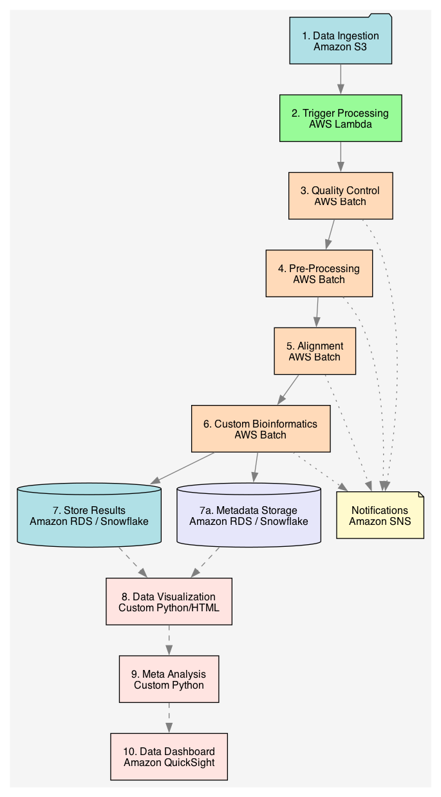

Expertise
Machine Learning Models
Data processing, feature engineering, model selection, hyperparameter tuning, and evaluation.


Statistics
The right statistics to answer your questions.
Data Visualizations
Intuitive visualizations to help understand your data.
Bioinformatic Data Pipelines
Automated bioinformatic pipelines with custom analyses for any sequencing technology.
Signal Processing
Extract information from complex signals.
Business Intelligence
Analyze sales, customer insights, and operational performance through data visualization, statistics, and ML.
Sales Target